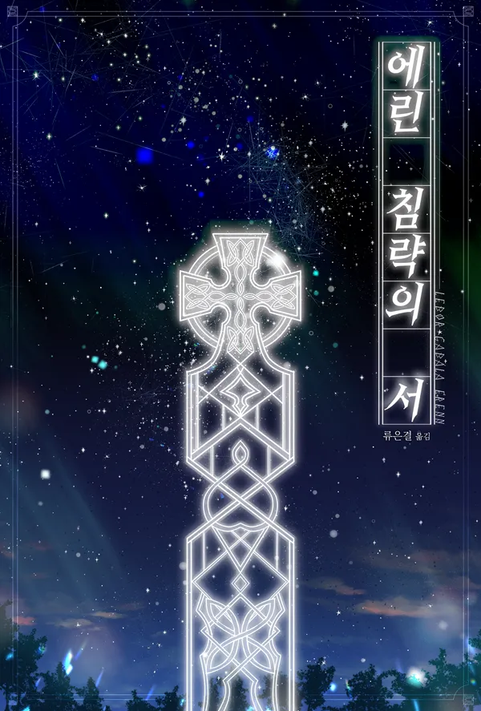

에린 침략의 서
아일랜드 켈트 신화의 정전
Leabhar Gabhála na hÉireann
- 발행일
- 2025년 1월 31일
- 엮은이
- 미히알 오 클레리, 샤룬 케틴 등
- 옮긴이
- 류은결
- ISBN
- 979-11-992778-3-0 (05890)
- 정가
- 16,900원
- 페이지46판(B6)을 기준으로 측정하였습니다. 독서 환경, 개정 등에 따라 다소 변동할 수 있습니다.
- 287
소개
아일랜드 켈트 신화에 입문하고 싶으신가요?
그렇다면 세 책을 추천합니다.
첫째, 《에린 침략의 서》로 역사와 세계관을 확인하세요.
둘째, 《아일랜드 땅이야기》로 지리와 전설을 확인하세요. (곧 출간 예정! ^^)
셋째, 《붉은 가지 이야기》로 200% 괴력난신을 즐기세요!
켈트 신화 입문의 첫걸음, 바로 여기에 있습니다. 《에린 침략의 서》 국내 최초 편역으로 지금 바로 딥 다이브!
목차
- I.침략의 서, 그 연대와 계보
- II.태초에 찾아온 캬사르의 일족
- III.샤라의 아들 파르홀론의 정복
- IV.파르홀론 일족의 멸망
- V.스키티아 사람 네바의 정복
- VI.피르 볼그의 귀환
- VII.피르 볼그의 왕사
- VIII.다난 신족의 도래
- IX.다난 신족의 계보 I
- X.다난 신족의 왕사
- XI.다난 신족의 계보 II
- XII.밀의 아이들의 기원
- XIII.밀 에스파네의 여행
- XIV.밀의 아들 에류온의 정복
- XV.에린의 대왕들
부록.«침략의 서» 해설·해제 — 양흥태, 인류학 박사
미리보기 주석은 본서에서 만나보실 수 있습니다.
37
네바Neimheadh의 증손이자 야르비뇰의 손자이며 비오하흐의 아들인 이바는 그의 백성을 이끌고 에린을 떠나 북방의 로흘란에 정착하였다. 이바의 무리는 그곳에서 번성하며 주술과 사술과 환술을 비롯한 온갖 이교도의 지식, 현인의 술법과 여러 기예를 공부하여 마침내 그 모든 일에서 가장 뛰어난 지혜와 학식을 갖추었다. 그들은 투아하 데Tuatha Dé, 즉 신족神族이라는 이름으로 불렸는데, 이는 그들 가운데 학식 있는 이들은 모든 재주에 뛰어나고 비술의 극에 달하여 강대한 힘을 가졌기에 신과 다름없다고 여겨졌기 때문이다. 반면 신족 가운데서도 학식이 없는 이들은 신이 아닌 평범한 인간으로 여겨졌다.
이들을 투아하 데 다난, 곧 “다난 신족”이라고도 하는데, 이 이름은 디알위의 딸 다누Danu에게서 유래하였다고 한다. «아일랜드에 관한 지식의 기초»에 따르면 다누의 세 아들 브리안Brian, 우하르Iuchar, 우하르와Iucharbha는 현인의 비술에 매우 능하여 그들의 일족에게 신이라는 이름으로 불리기를 원하였으니, 이것이 바로 신족이라는 이름이 붙은 연유이다.
브리안과 우하르와와 우하르
투아하 데 다난의 삼인의 신은
위대한 바다 너머 마나Mana 섬에서
에흐네의 아들 루에게 패하였도다.
다난 신족은 로흘란에 네 성시를 지어 그곳에서 스승을 모시고 가르침을 받았다. 이들이 세운 성시의 이름은 팔리아스Falias, 고리아스Goirias, 피니아스Finnias, 미리아스Muirias이며, 팔리아스의 스승은 모르파사Mórfeasa, 고리아스의 스승은 아스라스Easras, 피니아스의 스승은 이시키아스Uisicias, 미리아스의 스승은 셰비아스Semhias였다.
다난 신족은 로흘란을 떠날 때 네 성시에서 네 비보를 들고 나왔다. 팔리아스에서 온 비보는 리아 팔Lia Fáil이라는 돌이다. 이 돌은 에린의 성역 탸우르에 놓였고, 루 라와다를 시작으로 에린의 주권을 가져 마땅한 대왕이 그 앞에 서면 힘차게 울부짖었다. 그러나 그리스도가 탄생한 이후로 이 돌은 그 어떤 제왕 앞에서도 포효하지 않았으니, 이는 돌에 마귀의 힘이 깃들었기 때문이다. 바야흐로 주의 강탄 이래로 이 세상의 모든 우상에 깃든 사이한 힘이 다 사라진 것이다.
고리아스에서 전해진 비보는 루의 창이니, 이 창을 쥔 자를 상대할 수 있는 자는 아무도 없었다. 피니아스에서 전해진 비보는 누아의 검이니, 이 검에 상처를 입은 자는 그 누구도 도망쳐 살아날 수 없었다. 미리아스에서 전해진 비보는 다야의 솥이니, 이 솥에 끓인 음식을 먹고 만족하지 않는 자가 아무도 없었으므로 달리 “코레 안시크Coire Ainsic”, 곧 “메마르지 않는 가마솥”이라고도 하였다.
14세기 말의 사본 «랴칸의 황색 서Leabhar Buidhe Leacáin»에 이러한 노래가 전해진다.
팔리아스와 빛나는 고리아스,
피니아스와 강대한 미리아스
바깥세상에서 이긴 모든 싸움
이 위대한 성시에서 나왔도다
(…)
수레의 팔리아스의 시인 모르페사
고리아스의 날선 열망의 아스라스
첨탑의 요새 미리아스의 셰미아스
피니아스의 하얀 시인 이시키아스
(…)
팔리아스에서 이리로 온 리아 팔
에린의 왕 아래서 외치던 돌이며
날렵한 루의 손아귀에 들린 보검
고리아스에서 온 보배 중의 보배라
먼 바다 너머 피니아스 성에서
누아의 죽음의 창이 왔으며
미리아스에서 온 크고 힘센 보물
드높은 위업의 다야의 솥이라
38
배움을 다 마친 다난 신족은 아테네와 블레셋 사이의 땅에 머물렀다. 그런데 곧 이 두 민족 사이에 큰 분쟁이 일어나 서로를 미워하고 증오를 품은 끝에 전쟁이 벌어졌다. 이 싸움에서 아테네 사람들이 줄곧 패배를 거듭하여 싸우러 나갈 전사가 얼마 남지 않을 지경에 이르렀다.
그러자 다난 신족은 아테네와 우호를 맺고 사령술을 부려 전사한 아테네 병사의 시신에 악령을 깃들였다. 그 술법을 받은 망자의 몸이 다시 일어나 창칼에 맞기 전과 다를 바 없이 건강해졌다. 블레셋 사람들은 그들이 쳐 죽인 전사가 이튿날 다시 전장에 나오는 모습을 보고 크게 놀라 그들의 현인에게 조언을 구하였다. 블레셋의 원로가 전사들에게 말하였다.
“내일 싸우러 나갈 때 개암나무와 마가목으로 대못을 만들어 들고 가라. 열심히 싸워 승리를 거두거든 쓰러진 적의 목덜미에 그 못을 박거라. 만약 그들이 악령이라면 사람의 형상을 잃고 벌레 무더기로 변할 것이다.”
블레셋 전사들은 그 말대로 하였다. 그들이 분투하여 승리를 거두고 죽인 전사들의 목덜미에 대못을 박자 이튿날 그들은 벌레 무더기가 되었으니, 이렇게 아테네의 힘이 꺾이고 블레셋이 강성하게 되었다.
훗날 블레셋 사람들은 다난 신족이 아테네와 동맹하여 그들을 적대한 일을 떠올리고 앙심을 품어 군대를 모아 다난 신족을 치기로 결의하였다. 다난 신족이 이 일을 알고 알바 북방의 도르와 야르고르로 도망하여 그곳에 영지를 얻었다. 누아Nuadha가 그들의 주군이 되어 그곳에서 칠 년을 다스렸다. 칠 년 뒤에 다난 신족은 에린의 소식을 듣고 의논하여 이렇게 결의하였다.
“에린 땅에 피르 볼그가 정착하여 세력이 강성해졌다고 하는데, 그 땅은 마땅히 비오하흐의 후예인 우리가 가져야 할 것이니 우리가 에린을 쳐서 차지하자.”
그리하여 다난 신족은 함대를 이끌고 바다로 나섰다. 그들이 에린의 바닷가에 정박할 때까지 어떠한 모험을 겪었는지는 전해지지 않으나 도착한 날이 창세력 3303년의 발타네 초하룻날 월요일임은 분명하다. 뭍에 내린 그들은 타고 온 배를 모조리 불태웠는데, 이는 첫째로 포보리가 그 배를 훔쳐 그들의 뒤를 치지 못하게 하기 위함이었으며, 둘째로 그들이 패하고 피르 볼그가 승리하더라도 배를 타고 에린에서 도망하지 않겠다는 결의를 표하기 위함이었다.
다난 신족은 주술을 부려 주위에 짙은 어둠을 드리웠다. 그들이 사흘 뒤에 코나흐타의 콘와크네 렌Conmhaicne Rein의 산지에 다다를 때까지 피르 볼그 가운데 누구도 그들이 왔음을 알아차리지 못하였다. 다난 신족은 모습을 드러내고 그들의 친족인 피르 볼그에게 요구하였다.
“우리에게 너희의 왕권을 넘겨라. 그렇지 않으면 우리와 싸워야 할 것이다.”
그리하여 코나흐타 땅의 쿨 톨라Cul Toladh에 있는 콘와크네에서 다난 신족과 피르 볼그 사이에 큰 싸움이 벌어졌으니, 이곳은 오늘날 콩Cong 근교에 있는 마이 티랴Magh Tuireadh이다. 코나흐타에는 마이 티랴라는 이름으로 불리는 벌판이 두 곳이 있는데, 이 유명한 “마이 티랴의 첫 번째 싸움”이 벌어진 콩 근교의 마이 티랴를 달리 티랴 댜스Tuiredh Deas, 곧 “남쪽 마이 티랴”라고도 한다.
다난 신족이 에린에 쳐들어왔을 때 피르 볼그의 대왕은 앞서 언급한 아르크의 아들 오히였으며, 왕비는 히스파니아 왕 마이모르Maghmór의 딸 탈테Tailte였다. 한편 다난 신족의 군주는 아다를라우Eadarlámh의 손자이자 아흐타흐Eachtach의 아들인 누아였다. 기나긴 싸움 끝에 마침내 피르 볼그가 패하여 북쪽으로 패주하였으며, 마이 티랴에서 트라 오할레에 이르기까지 무수한 생명이 살해당하였다. 한편 다난 신족 가운데서는 알리Allaoi의 아들 엘리오Eidhleo가 시묜의 손자 냐르혼Nearchon의 손에 쓰러져 에린에서 죽음을 맞은 첫 신족이 되었다.
다난 신족은 달아나는 피르 볼그를 쫓아 다다른 트라 오할레에서 아르크의 아들 오히를 찾아내었다. 앞서 말하였듯 바이리의 손자이자 네바의 아들인 캬사르브, 루, 루아흐라 형제가 오히를 쳐 죽였다.
한편 다난 신족 가운데서도 많은 수가 전사하였으며, 그들의 군주 누아도 어깨에서 팔이 잘려 나가는 큰 상처를 입었다. 훗날 의술사 디안 케흐트Dian Céacht와 놋점장이 크레네Creidhne가 은으로 팔을 만들어 누아의 어깨에 이어 붙였는데, 그 모든 손가락과 관절에 생명력이 깃들어 날 때부터 지닌 팔과 다를 바가 없었다. 그런데 디안 케흐트의 아들 미아흐Miach가 얼마 후에 그 은팔을 도로 떼어내고 마디와 마디, 힘줄과 힘줄을 이어 스물일곱 날 만에 뼈와 살로 된 새 팔을 만들어내니 그의 아버지 디안 케흐트가 아들의 재주와 위업을 크게 시기하였다. 차설, 누아는 이러한 연유로 아르갸들라우Airgeadlámh, 곧 “은팔”이라는 별명으로 불리게 되었다.
39
피르 볼그의 왕비인 히스파니아 왕 마이모르의 딸인 탈테는 남편이 죽은 뒤에 다난 신족의 두아흐 달Duach Dall의 아들 오히 가루Eochaidh Garbh와 재혼하였다. 탈테는 마이 티랴의 싸움이 끝난 뒤 미이 땅의 칼 후안Caill Chuan 숲을 베었고, 한 해가 가기 전에 숲이 들판으로 변하여 그곳에서 토끼풀을 길렀다.
한편 스칼 발루Scal Balbh라는 별명으로도 불리는 디안 케흐트의 아들 키안Cian은 발로르Balor의 딸 에흐네Eithne와의 사이에서 얻은 그의 아들 루Lugh를 탈테에게 보내어 양아들로 삼게 하였다. 탈테는 루가 무기를 들 수 있을 때까지 길렀고, 훗날 죽기 전 그의 친우와 양아들에게 소망을 말하였다.
“내가 숲을 베어 들로 만든 그 땅에 나의 이름을 붙이고 나의 시신을 묻어 다오.”
그리하여 탈틴Tailtin이라는 이름이 붙은 그 땅에 그가 묻혔다. 루가 양어머니를 기리기 시작한 이래로 역대 대왕은 탈틴 땅에서 해마다 그를 추도하는 경기를 열었다. 루나사 이 주 전부터 이 주 후까지 이어진 이 경기는 그리스의 올림픽 제전과 유사하였다고 전해진다. 루나사라 함은 곧 “루의 나사násadh”를 뜻하며, “나사”란 사람의 죽음을 추모하는 모임을 말한다. 이 축제가 벌어지던 곳의 북서쪽에 탈테의 무덤이 있다.
40
앞서 말한 바와 같이 마이 티랴의 싸움에서 소수를 제외한 피르 볼그는 모두 살해당하였고, 살아남은 이들은 다난 신족을 피하여 에린 주변의 여러 섬으로 도망하였다가 훗날 크리흐네 부족의 침략에 떠밀려 다시 에린으로 돌아왔다.
«마이 티랴의 첫 번째 싸움»에 따르면 싸움의 마지막 날에 살아남은 피르 볼그 전사의 수효는 샤난의 아들 슈랑Sreang을 비롯한 삼백이었는데, 이들은 최후까지 맹렬히 항전한 끝에 에린 땅의 일부를 택하여 살 권리를 얻고 코나흐타를 택하였다.